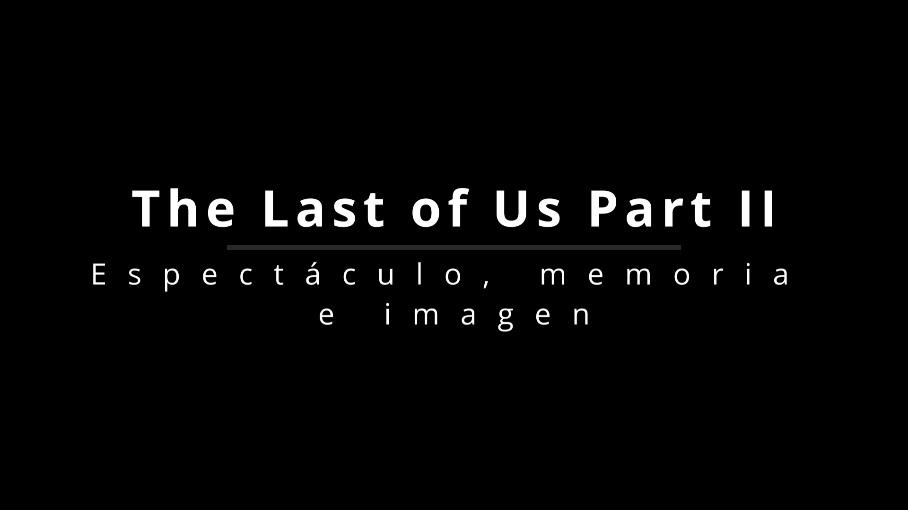
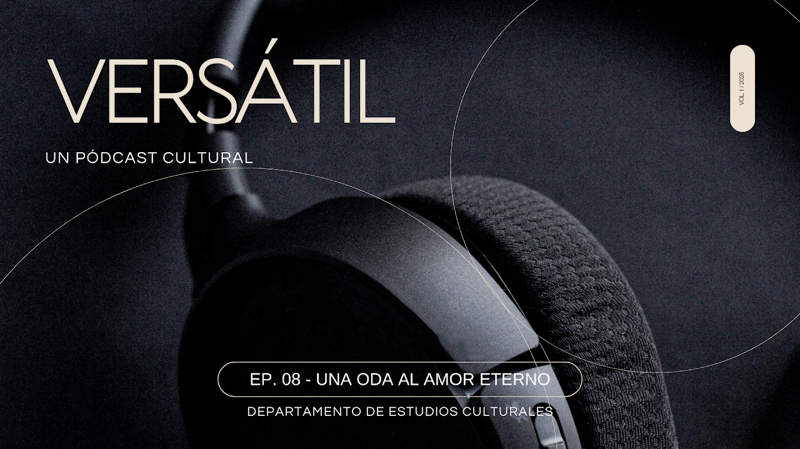

Tipo: VideoPodcast
Integrantes: Andres Ariel Rubio Lavin, Ana Jimena Gil Perez, Jesus Alfredo Cuadros Ramos
Descripción: ¿Qué pasa cuando un videojuego no solo te entretiene, sino que te obliga a mirar lo que duele... En este episodio, nos sumergimos en The Last of Us Part II para explorar cómo la imagen, la memoria y el dolor se entrelazan en una historia que incomoda, rompe y resiste. Junto a Debord, Didi-Huberman y Karen Cordero, cuestionamos el espectáculo, recorremos paisajes marcados por el trauma y descubrimos esas pequeñas luces que como luciérnagas aparecen en medio de la oscuridad. Este no es solo un análisis del juego: es una invitación a mirar distinto, a demorarse, y a sentir con lo que queda cuando todo parece perdido. Si alguna vez pensaste que los videojuegos no podían ser arte… este episodio es para ti.

Tipo: Podcast
Elaborado por: Jesus Alfredo Cuadros Ramos
Descripción: ¿Qué sucede cuando una canción se convierte en un susurro de despedida, en un puente entre el dolor y la esperanza? En este episodio de Versátil, nos adentramos en la historia detrás de “Arrullo de Estrellas”, una de las canciones más íntimas de Zoé. Descubrimos cómo León Larregui transforma la pérdida de su madre en una obra profundamente conmovedora, cargada de amor, fe y redención. A través de una narrativa sensible y pausada, exploramos cómo el arte nace del duelo, cómo la música se convierte en arrullo, y cómo una letra puede abrazar a miles. Si alguna vez has amado a alguien hasta el alma, este episodio es para ti.